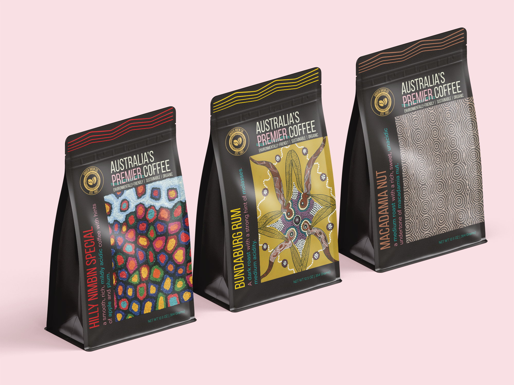
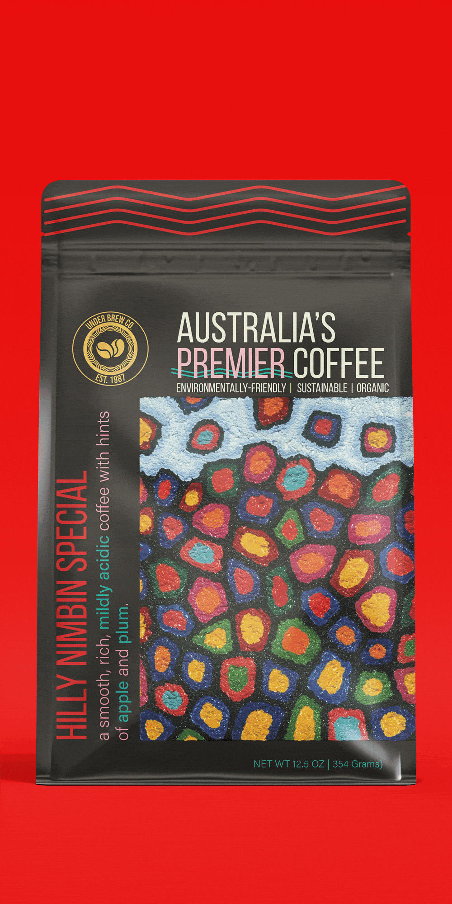
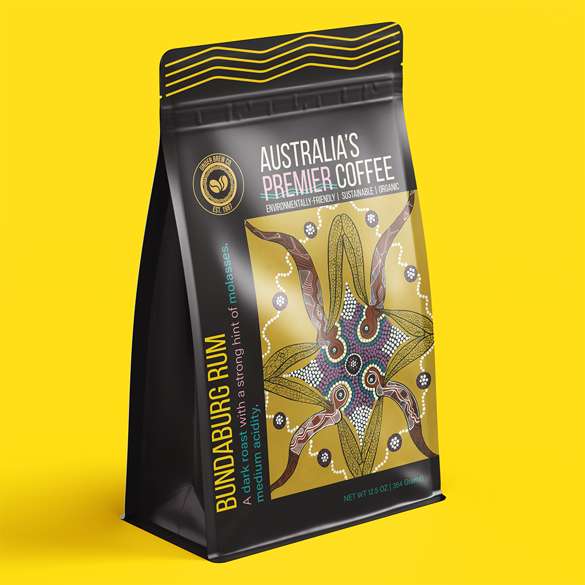
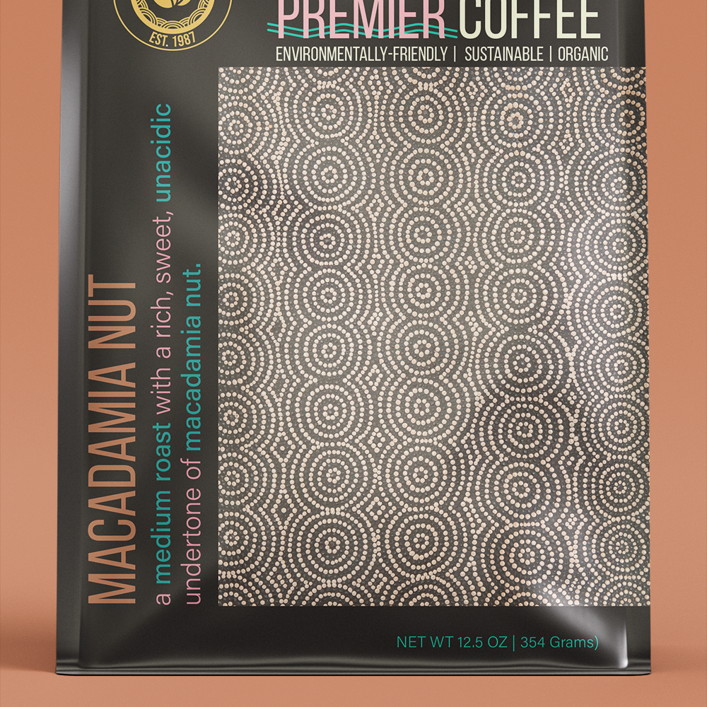
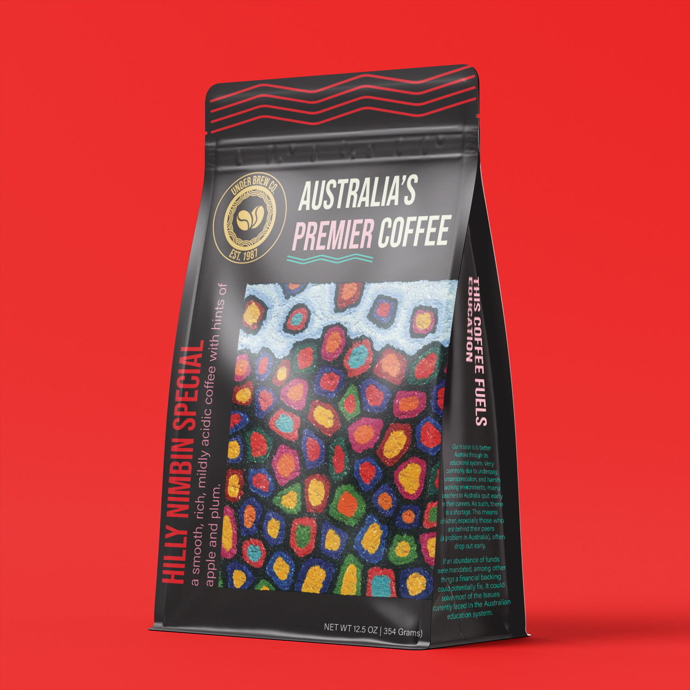
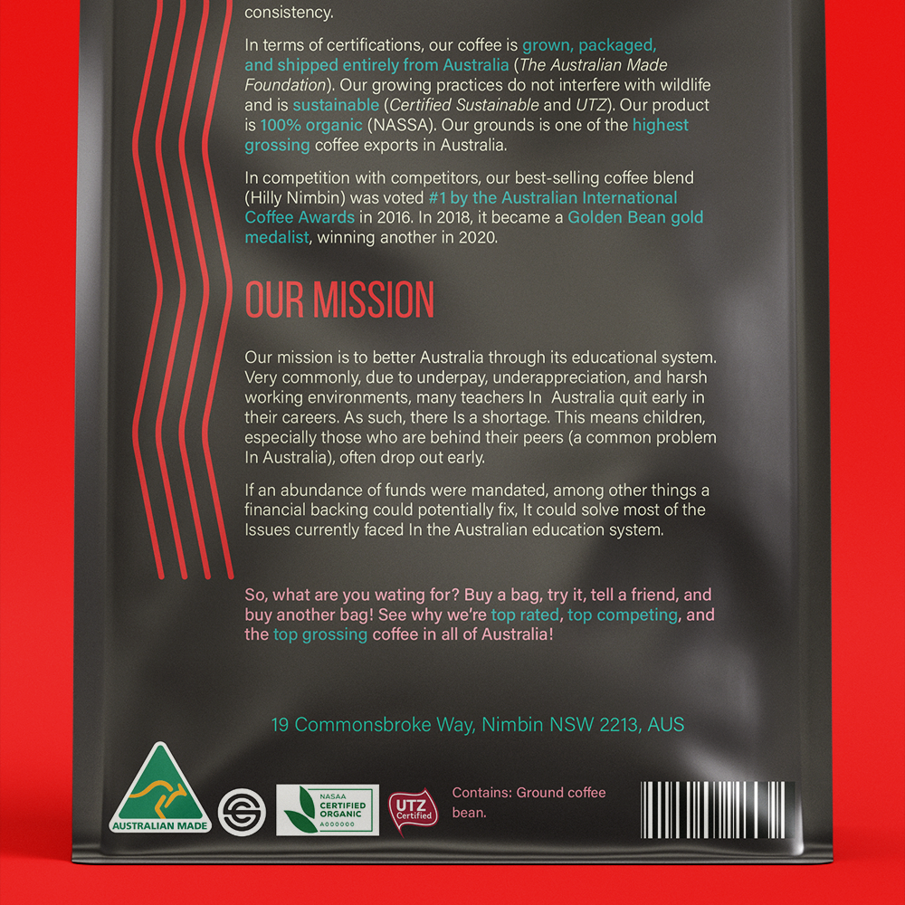
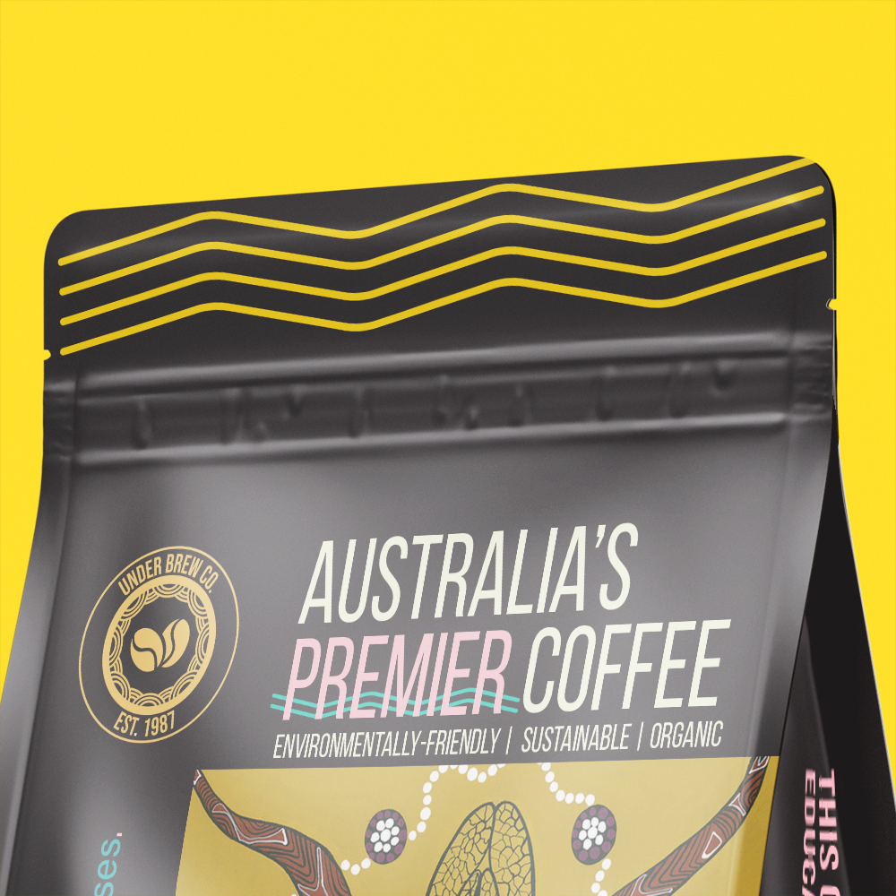

Figure 1-1 - All three coffee packaging mockups together.Under Brew Co. is a coffee company cultivated in Australia - more specifically, in Nimbin, New South Wales. Starting from a family-owned supplier of coffee beans in 1987, it has since become renowned for its authentic Australian flavor and consistency.
Under Brew Co. needs a set of packaging mockups for a new line of flavors: The Hilly Nimbin Special, Bundaberg Rum, and Macadamia Nut. In line with the brief’s requirements, the coffee packaging must contain Under Brew’s certifications and seals, a barcode, ingredient list, address, approximate weight, and coffee acidity level. It must also contain the company’s brief description, logo, and mission statement.
Alongside a mood board, I researched various aspects of Australia, including wildlife and culture. I also researched coffee and café imagery. My goal was to attach an important part of Australia to the packaging, so much so that natives to the country could immediately recognize it as Australian-made.
Depending on the artwork and flavor, I changed a color on the package’s palette. For example, Bundaberg brand rum bottles have a stark yellow seal on them, macadamia nuts are an earthy taupe color, etc. This created a cohesive identity between the packaging designs, but made it easy to tell them apart by flavor.






I found this to be one of my favorite projects to look back on. Apart from enjoying package design, I learned the rich cultural history of Australia. It’s always fascinating to learn about countries other than my own, as well as using that information to implement the solution to a design problem.
While the research was incredibly exhaustive, it helped me understand why proper preparation is important in the design process. This focus on thoughtful research helps to not only understand the situation for which you are designing, but the solution you are trying to fix.